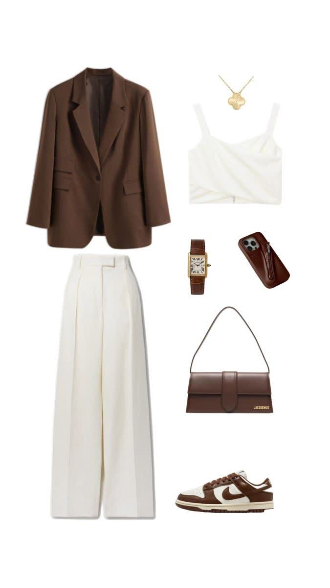
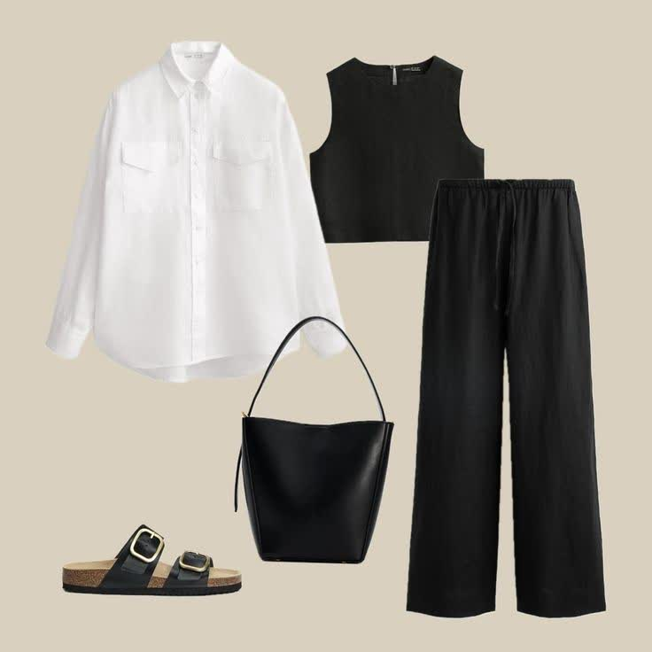

استایل مینیمال
استایل مینیمال از جمله سبکهایی است که بر اساس اصل "کمتر، بیشتر است" شکل گرفته است. در این استایل خبری از تزئینات اضافی، طرحهای شلوغ یا رنگهای تند نیست. همه چیز بر پایه سادگی، تناسب و آرامش چیدمان شده است.
لباسهای مینیمال اغلب در رنگهایی مانند سفید، مشکی، خاکستری، کرمی و گاهی یاسی طراحی میشوند. ترکیب این رنگها در کنار برشهای ساده، به ظاهر فرد حالتی مرتب، شیک و مدرن میدهد.
ویژگیهای کلیدی استایل مینیمال:
- سادگی در طراحی و اجتناب از شلوغی
- رنگهای خنثی و ملایم (سفید، یاسی روشن، مشکی)
- برشهای تمیز و منظم
- پارچههای باکیفیت با حس لطافت
- استفاده محدود از اکسسوریها
اگر دنبال استایلی هستی که همیشه شیک به نظر برسی بدون اینکه تلاش زیادی کرده باشی، مینیمال بهترین انتخابه! این سبک در محیطهای اداری، روزمره و حتی مهمانیهای ساده بهخوبی عمل میکنه و همیشه حس آرامش و اعتماد به نفس القا میکنه.
